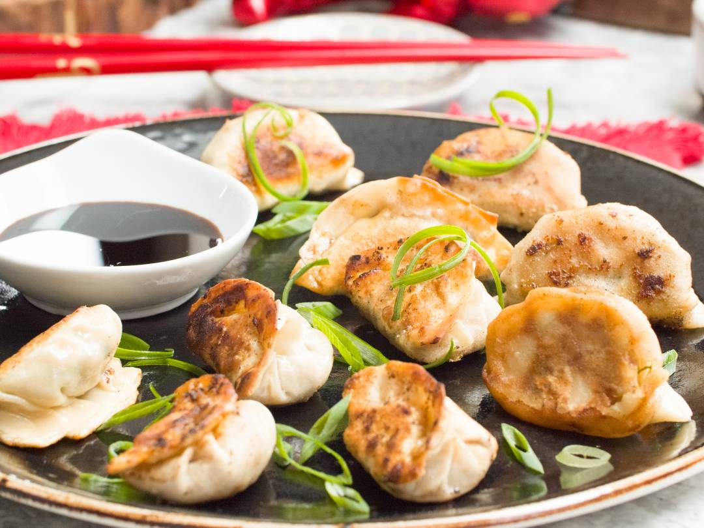

Pork & Chive Dumplings

Description
This is my favourite Sunday lunch dish to make with my wife. Classic Chinese dumplings with some Pork & Chive Fillings!
Ingredients
- 2 cups flower
- 1/2 cup water
- 1/2 cup chies
- 500G ground pork
- 1 1/2 teaspoons Rice wine
- 3 dashes white pepper powder
- 1/4 teaspoon sesame oil
- Chinese black vinegar
Steps
- Mix flour and kneed - 15 minutes
- Separate dough into equal portions, roll into cylinders
- Cover with wet towel and set aside
- Chop the chives, mix with the ground pork - add in all ingredients
- Cut dough into 1/4 length, use rolling pin to flatten to round shape
- Put small filling in centre of the skin and seal tightly with your fingers
- Repeat above step to fill until all ingredients used
- Bring water to boil
- Put dumplings in boiling water and cover
- Once dumplings are floating, this means they're cooked
- Dish out dumplings with strainer, onto a serving platter
- Serve hot with black vinegar